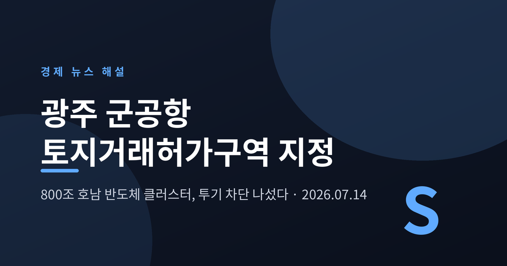
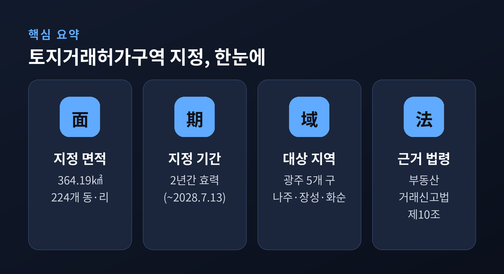
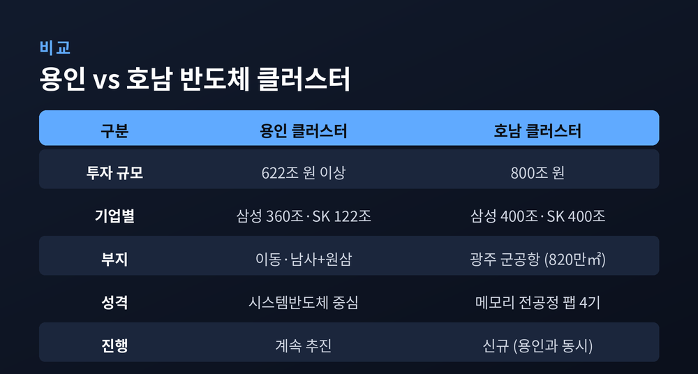
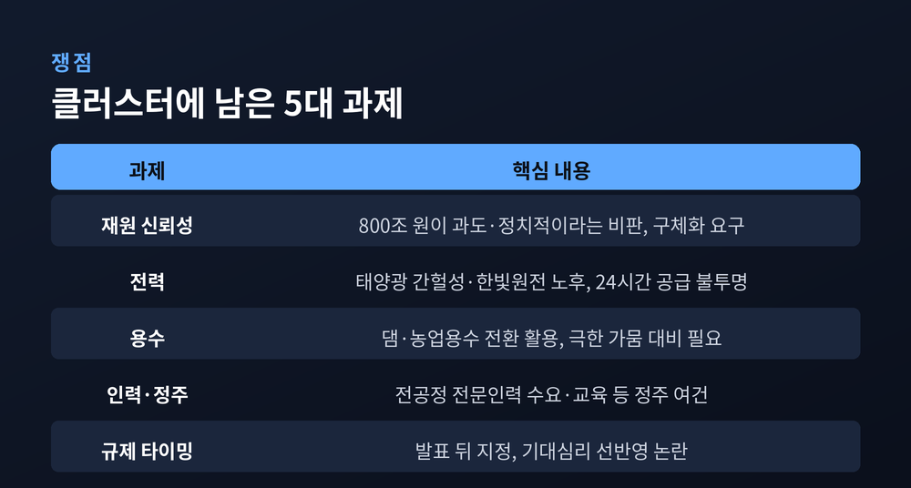
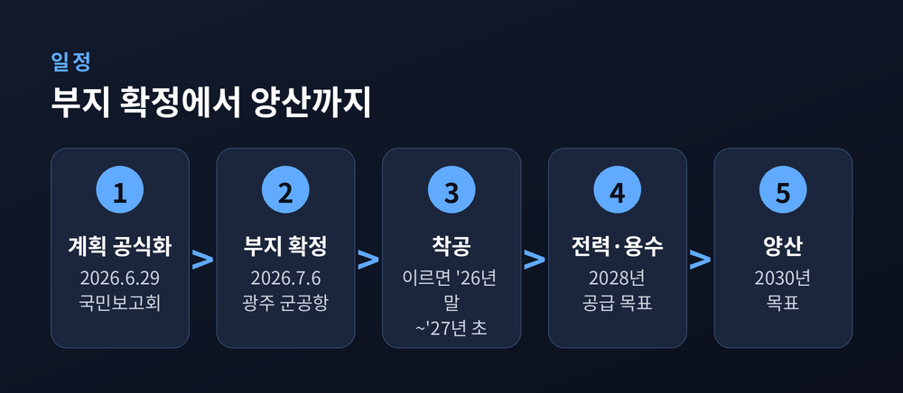

오늘 효력 발생, 2년간 · 부지 확정부터 남은 과제까지

오늘 이야기는 광주에서 시작합니다. 오늘(7월 14일)부터 광주 군공항 일대가 토지거래허가구역으로 묶였습니다. 800조 원이 거론되는 호남 반도체 클러스터가 그 배경입니다. 무슨 일이 벌어졌고, 이 결정이 왜 중요한지 차분히 정리해 보겠습니다.
이 글은 정보 제공을 위한 해설이며, 특정 지역의 부동산 매매나 투자를 권유하는 글이 아닙니다.
국토교통부가 지난 9일 광주 군공항 일원을 토지거래허가구역으로 지정했습니다. 효력은 오늘부터입니다. 기간은 2028년 7월 13일까지, 꼭 2년입니다.
묶인 땅의 규모가 작지 않습니다. 8개 시·구·군, 224개 동·리, 모두 364.19㎢에 이릅니다. 광주 동·서·남·북·광산구와 전남 나주시, 장성군, 화순군이 포함됐습니다. 군공항 부지를 중심으로 반경 10㎞에 닿는 동·리를 기준으로 삼았습니다.
허가구역 안에서는 일정 규모 넘는 땅을 사고팔 때 시장·구청장·군수의 허가를 먼저 받아야 합니다. 허가를 받았다면 정해진 목적대로 그 땅을 써야 합니다. 실수요가 아닌 거래는 걸러내겠다는 장치입니다. 근거는 '부동산 거래신고 등에 관한 법률' 제10조입니다.
땅에만 그치지 않습니다. 아파트를 포함한 주택도 대지 지분 면적이 60㎡를 넘으면 허가 대상이 되는 것으로 전해집니다. 허가를 받으면 2년의 실거주 의무가 따라붙습니다. 허가 없이 거래하거나 약속한 대로 쓰지 않으면, 매년 취득가액의 최대 10%에 이르는 이행강제금이 부과될 수 있습니다. 규제의 이빨이 꽤 날카로운 편입니다.
민형배 전남광주통합특별시장은 이번 조치를 "국가 핵심 전략사업을 지키기 위한 것"이라고 설명했습니다. 투기 수요를 차단해 사업이 흔들리지 않게 하겠다는 뜻입니다.

토지를 이렇게 넓게 묶은 이유는 하나입니다. 이 땅 위에 호남 반도체 클러스터가 들어서기 때문입니다.
거론되는 투자액은 800조 원입니다. 삼성전자와 SK하이닉스가 각각 400조 원씩, 메모리 반도체 전공정 팹 4기를 짓는 데 쓰겠다고 밝힌 규모입니다. 올해 정부 예산이 728조 원이니, 그보다 큰 돈이 한 지역에 몰리는 셈입니다.
여기서 한 가지는 분명히 해 둘 필요가 있습니다. 이 800조 원은 정부가 세금으로 대는 돈이 아닙니다. 전액 민간 기업의 투자입니다. 정부와 지자체의 몫은 전력·용수·도로 같은 기반시설을 깔고 행정을 돕는 일입니다. 광주·전남은 통합에 따른 지원금 가운데 적게는 5조 원, 많게는 20조 원까지 기반시설에 넣을 수 있다는 입장을 내비쳤습니다. 호남 반도체 클러스터에 AI 데이터센터 같은 사업까지 더하면, 이 일대에 거론되는 총 투입액은 1,350조 원에 이릅니다.
규모만큼 인프라 요구도 만만치 않습니다. 반도체 팹은 6.3기가와트(GW) 수준의 전력과 수십만 톤의 용수를 요구합니다. 도시 하나가 쓰는 전기에 견줄 만한 양입니다. 이 갈증을 어떻게 채우느냐가 사업의 성패를 가르는 열쇠가 됩니다.
부지로는 광주 군공항 자리가 낙점됐습니다. 지난 6월 29일 청와대 국민보고회에서 계획이 공식화됐고, 7월 6일 입지가 확정됐습니다. 이 자리를 고른 데는 이유가 있습니다. 약 820만㎡, 250만 평에 이르는 땅을 한 번에 확보할 수 있습니다. 공항이라 이미 평탄화가 끝나 공사 기간을 줄일 수 있습니다. 국유지여서 토지 수용을 둘러싼 분쟁도 적습니다.

기업과 정부의 셈법은 조금 다릅니다.
기업은 수요를 봅니다. 이재용 삼성전자 회장은 "폭발적인 수요에 새 단지를 준비할 시점이 앞당겨졌다"고 했습니다. 최태원 SK그룹 회장은 "메모리 공급 부족이 더 심해질 것"이라고 내다봤습니다. AI 서비스가 퍼지고 이른바 피지컬 AI 시장이 열리며 메모리를 향한 갈증이 커진 탓입니다.
정부는 균형을 이야기합니다. 이재명 대통령은 "수도권은 폭발 직전, 지방은 소멸 직전"이라며 국가균형발전을 핵심 전략으로 내세웠습니다. 다만 청와대는 "수도권 공장을 옮기는 것이 결코 아니다"라고 선을 그었습니다. 용인은 용인대로 가고, 호남은 새 벨트라는 설명입니다.
전문가들도 분산의 명분에 힘을 보탭니다. 대만 TSMC가 남부로, 미국 마이크론이 여러 주로 생산기지를 흩어 놓은 것처럼, 위험을 나누고 전력망 부담을 더는 길이라는 것입니다. 재생에너지가 풍부한 호남에서 전기를 만들어 그 지역에서 쓰는 '지산지소'의 이점도 거론됩니다. 광주에 이미 자리 잡은 AI 집적단지와 만나면, 칩부터 데이터센터·AI 서비스까지 이어지는 하나의 생태계가 완성될 수 있다는 기대도 나옵니다.
물론 장밋빛만은 아닙니다. 짚어야 할 그늘도 또렷합니다.
첫째는 숫자를 향한 의심입니다. 800조 원이 지나치게 크고 정치적이라는 비판이 언론 일각에서 나옵니다. 투자 계획을 더 구체화해야 한다는 지적도 함께 붙습니다.
둘째는 전기입니다. 반도체 공장은 24시간 멈추지 않는 전력을 먹습니다. 호남에 태양광이 많다지만, 간헐성 탓에 그것만으로는 부족합니다. 한 에너지 전문가는 전남 영광 한빛원전의 노후를 들며, 계속운전 정책까지 손봐야 할 수 있다고 진단합니다. 정부는 올해 말 나올 전력수급기본계획에 해법을 담겠다고 밝혔습니다.
셋째는 물과 사람입니다. 극한 가뭄에도 용수를 대는 계획, 고급 인력이 호남에 머물 정주 여건이 숙제로 남습니다.
넷째는 규제의 타이밍입니다. 한 부동산 전문가는 "대형 개발은 발표만으로 시장이 먼저 움직인다"고 말합니다. 먼저 움직인 사람은 이미 사들였고, 호가는 기대를 얹어 오른 뒤라는 것입니다. 실제로 부지 확정 소식이 알려진 뒤 일부 땅 호가는 20~30% 뛰었고, 매물은 자취를 감췄습니다. 군공항 인근 광산구 송정동의 한 상업지는 3.3㎡당 1,500만 원에 나왔다가, 발표 직후 2,000만 원으로 호가가 올랐습니다. 올해 1월부터 5월까지 이 지역 토지 거래는 건당 평균 3억 5,100만 원으로, 1년 전보다 42%가량 커졌습니다. 2023년 용인 사례가 발표와 규제를 같은 날 맞췄던 것과 비교하면, 이번엔 그 사이 시차가 있었습니다.

정부의 목표는 빠릅니다. 대통령 임기 안에 완공하겠다는 그림입니다.
전문가들은 이르면 올해 말이나 내년 초 착공, 2028년 전력·용수 공급, 2030년 양산을 점칩니다. 팹 4기 가운데 2기는 군공항이 완전히 옮겨가기 전에도 먼저 첫 삽을 뜰 수 있다고 봅니다.
넘어야 할 산도 남았습니다. 군공항 이전을 둘러싼 한미 협의, 국가산업단지 지정 절차, 이주 대상 가구를 위한 이주단지 조성 같은 과제가 줄지어 있습니다.
부동산 시장은 당분간 숨을 고를 전망입니다. 규제가 단기 거래를 눌렀지만, 중장기로는 다시 오를 것이라는 관측이 우세합니다.

정리하면 이렇습니다. 오늘의 토지거래허가구역 지정은, 800조 원짜리 큰 그림을 지키기 위한 첫 단추입니다. 부지도 잡았고 명분도 세웠습니다. 다만 전기와 물, 사람과 시간이라는 현실의 벽이 그대로 남아 있습니다.
— 부지를 정하는 일과 공장을 세우는 일 사이에는, 아직 건너야 할 강이 여럿 있습니다.
기대가 큰 만큼 차분함이 필요한 때입니다. 이 클러스터가 호남의 지도를 바꿀 수 있겠냐고 물으신다면, 답은 앞으로의 2년에 달려 있다고 말씀드리겠습니다.